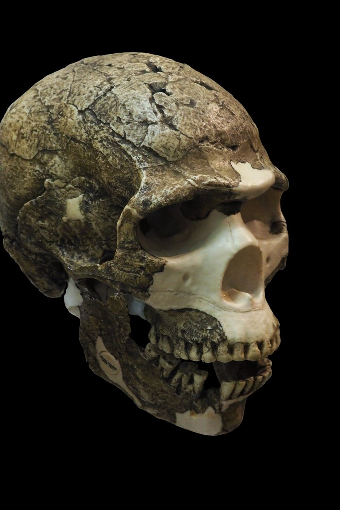

The Shanidar Neanderthals are the remains of at least ten individuals from Shanidar Cave in Iraqi Kurdistan, first excavated by Ralph Solecki between 1951 and 1960. Shanidar 1 survived severe injuries and disabilities, which many researchers read as evidence of care. The famous Shanidar 4 “flower burial” is now widely doubted; the pollen may have been brought in by burrowing bees. But new excavations, including the 2018 discovery of Shanidar Z, strengthen the case that Neanderthals buried their dead here.
One Neanderthal from Shanidar Cave lived with a crushed left eye socket, a right arm missing its forearm and hand, an abnormal gait and bony growths that had closed his right ear canal. He was 40 to 50 years old when he died. Known as Shanidar 1, he is the best-known of the Shanidar Neanderthals, and his skeleton is still at the centre of an argument about whether Neanderthals cared for one another.
Shanidar is a large cave in the Zagros Mountains of Iraqi Kurdistan. Between 1951 and 1960, the American archaeologist Ralph Solecki excavated the remains of at least ten Neanderthals there. Two groups stand out: an older cluster of burials dated to about 75,000 years ago and a later set dated to around 50,000 years ago.

Shanidar 1: the man who was looked after?
Shanidar 1 was found in 1957. In a 2017 study in PLOS ONE, Erik Trinkaus and Sébastien Villotte summarised his injuries and added a new one:
- A crushing fracture of the left orbit (eye socket), probably reducing vision on that side.
- Loss of the right forearm and hand, leaving a badly impaired arm and shoulder.
- Evidence of an abnormal gait.
- Advanced external auditory exostoses — bony growths in both ear canals, fully bridging the right one. Trinkaus and Villotte concluded he had serious hearing loss, at least on one side.
Their argument was that a partly deaf, partly blind, one-armed hunter-gatherer would struggle to survive alone in the Pleistocene. The bones show he lived for years after his injuries. That points to support from others.
This is a strong inference, but still an inference. Survival shows that he got food and protection. It does not show motive, and it cannot rule out that he contributed in ways the bones do not record. The fairest reading is that Shanidar 1 lived within a group that tolerated and supported a disabled member. Whether we call that “compassion” depends on how much of our own psychology we project backwards.
Not every injury at Shanidar was accidental. A rib of Shanidar 3 bears a healing wound that some researchers attribute to a sharp, possibly thrown, weapon.
How a pollen sample became the flower burial
Shanidar’s fame rests on a single soil sample. In 1960, Solecki’s team lifted the skeleton of Shanidar 4. Pollen specialist Arlette Leroi-Gourhan later found clumps of pollen from flowering plants in sediment around it.
| Year | Claim or challenge |
|---|---|
| 1960 | Shanidar 4 excavated; soil samples taken around the body |
| 1971 | Solecki’s book Shanidar: The First Flower People popularises the idea |
| 1975 | Solecki publishes “Shanidar IV, a Neanderthal flower burial” in Science |
| 1999 | Jeffrey Sommer argues burrowing rodents (Persian jirds), which store flowers and seeds, could explain the pollen |
| 2020 | Shanidar Z published beside the old “flower burial” area |
| 2023 | Chris Hunt and colleagues argue the pollen clumps were most likely left by ground-nesting bees |
The 2023 paper, in the Journal of Archaeological Science, is the most detailed re-examination yet. Its authors, from Liverpool John Moores and Cambridge universities, reported that mixed pollen clumps are typical of solitary bees provisioning their nests, and that ancient bee burrows occur in the cave sediments. They did not claim to have excluded every other explanation.
The flowers became a symbol for a generation. They were cited as proof that Neanderthals had feelings, symbolism and a sense of beauty. That made the claim easy to remember and hard to retire. The evidence was always indirect: pollen grains, not flowers, in a few soil samples.
Shanidar Z: back into the cave
In the 2010s, a team led by Graeme Barker of the University of Cambridge returned to Solecki’s trench. In 2018 they found the upper body of a Neanderthal, almost complete to the waist, in the same cluster as Shanidar 4. They named it Shanidar Z. Emma Pomeroy and colleagues published the find in Antiquity in 2020.
In May 2024, the University of Cambridge released new details alongside the Netflix documentary Secrets of the Neanderthals:
- The skull had been crushed to around 2 cm thick, possibly by rockfall soon after death.
- Conservator Lucía López-Polín reassembled it from more than 200 fragments.
- Proteins in tooth enamel indicated a female, and heavy tooth wear suggested she was perhaps in her mid-forties. She stood about 5 feet (around 1.5 m) tall.
- She was laid in a natural gully that had been further hollowed out by hand, her left hand curled under her head and a rock behind it like a small cushion.
Shanidar Z is the fifth individual in a cluster of bodies buried behind a tall upright rock in the middle of the cave, all dated to around 75,000 years ago. The Cambridge team suggests the rock may have served as a landmark that drew Neanderthals back to the same spot. They also report that she may be the upper half of an individual partly excavated in 1960.
Her age is notable in itself. Reaching the mid-forties was an achievement in the Pleistocene, and Shanidar 1 was a similar age. An older adult carried knowledge of landscapes, seasons and food sources. We look at what the fossil record says about lifespans in how long early humans lived.
How the Shanidar Neanderthals treated their dead
The Shanidar story has flipped in an interesting way. The romantic part, the flowers, has weakened. The more important part, deliberate burial, has strengthened. A cluster of bodies placed in the same spot, a body laid in a shaped hollow, repeated returns over time: these are hard to explain as accidents.
The Cambridge team also found traces of charred plant food, such as wild seeds and pulses, in the sediments around the older cluster. As Pomeroy put it, the body of Shanidar Z was “within arm’s reach” of people cooking and eating. For these Neanderthals, the dead and the living seem to have shared the same space.
Shanidar also matters for what came after. The cave was used first by Neanderthals and later by our own species. That makes it a natural laboratory for one of the biggest questions in human evolution, which Barker’s team is now pursuing: why Neanderthals disappeared as Homo sapiens spread into regions they had occupied for hundreds of thousands of years. Our article on why Neanderthals went extinct sets out the leading explanations.
Debate continues over how far burial at Shanidar reflects belief or ritual, rather than practical disposal of the dead. Our broader review, did Neanderthals bury their dead?, weighs Shanidar against La Chapelle-aux-Saints and La Ferrassie. For how these people differed from us, see Homo sapiens vs Neanderthals or the Neanderthal species profile, and place them in time on the interactive family tree.
How did a Neanderthal compare with a modern human in brain size, height and range? Line them up side by side.
Compare the species →Frequently asked questions
Where is Shanidar Cave?
Shanidar Cave is in the Zagros Mountains of Iraqi Kurdistan, in northern Iraq. Ralph Solecki excavated Neanderthal remains there between 1951 and 1960.
What happened to Shanidar 1?
Shanidar 1 was an older adult male who survived a crushed left eye socket, the loss of his right forearm, an abnormal gait and probable hearing loss. His survival suggests support from his group.
Was the Shanidar flower burial real?
Probably not as described. The pollen around Shanidar 4 may have been brought in by burrowing rodents or, as a 2023 study argues, ground-nesting bees.
What is Shanidar Z?
Shanidar Z is a Neanderthal found in 2018 and published in 2020. Later analysis suggested an older female, about 75,000 years old, whose crushed skull was rebuilt from more than 200 fragments.
Did the Shanidar Neanderthals bury their dead?
Many researchers think so. A cluster of bodies behind one large rock, including Shanidar Z laid in a hollowed gully, points to repeated, deliberate burial.
- Solecki, R. S. (1975). 'Shanidar IV, a Neanderthal flower burial in northern Iraq.' Science 190, 880–881. science.org
- Trinkaus, E. & Villotte, S. (2017). 'External auditory exostoses and hearing loss in the Shanidar 1 Neandertal.' PLOS ONE 12(10), e0186684. doi.org
- Pomeroy, E. et al. (2020). 'New Neanderthal remains associated with the “flower burial” at Shanidar Cave.' Antiquity 94, 11–26. doi.org
- Hunt, C. O., Pomeroy, E., Reynolds, T., Tilby, E. & Barker, G. (2023). 'Shanidar et ses fleurs? Reflections on the palynology of the Neanderthal “Flower Burial” hypothesis.' Journal of Archaeological Science 159, 105822. sciencedirect.com